《OpenGL ES 2.0 for Android》读书笔记
这是一本关于OpenGL ES 2.0（以下简称OpenGL）快速入门的书。本书使用OpenGL2.0完成了一个3D游戏的制作，游戏名叫做Air Hockey，从Android开发环境的搭建到最后游戏的开发完工，作者每一步都讲述的很详实，是一个很好的学习OpenGL的例子。🌰 本文是我在通读全篇后写下的总结。
推荐的一些在线资料
-
首先是作者维护的一个博客
-
另外还推荐看一下Khronos Group的在线文章
OpenGL的绘图方式 —— 点、线、三角形
我们都知道OpenGL是用来2D或3D绘图的，可以绘制直线、各类图形、各类图像。
OpenGL其实只能绘制三角形，确定三个顶点，然后就可以绘制一个三角形，多个三角形拼在一起就可以组成各式各样的图形，把图片资源贴到这些各式各样的图形上就可以实现图像的绘制。
所以，想要用OpenGL绘制图形，只需要确定两个问题：顶点、三角形上的颜色。
Air Hockey的效果图
通过本文的讲解，最终做出的效果如下。全部使用OpenGL绘制而成，并添加了交互逻辑。这个游戏貌似国内很少人玩，可以去应用商店下载一个玩一玩。
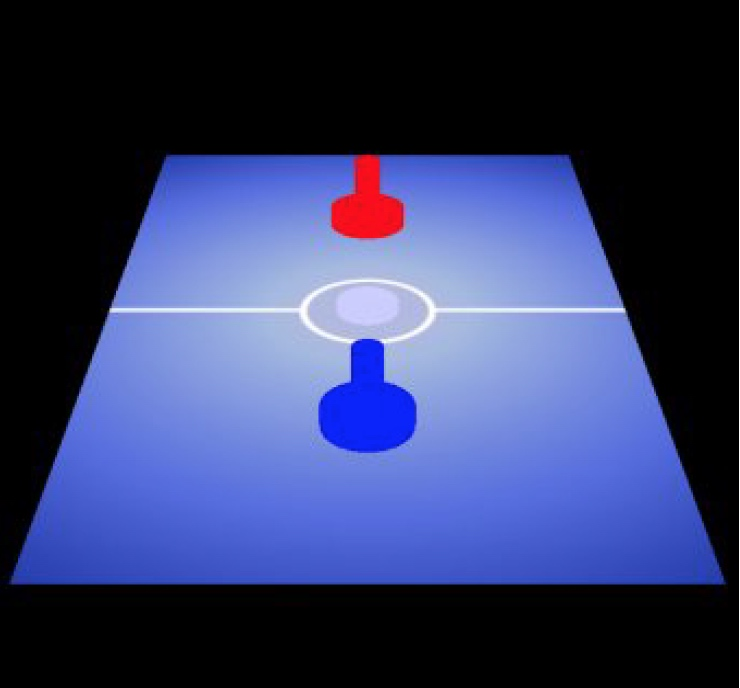
OpenGL坐标和屏幕坐标
OpenGL中的坐标涉及到各种转换操作，也是比较容易混乱的一点，这里单独说明。
我们平时理解的二维坐标
本游戏主要有一个桌子，两个冰球，然后还有中间的一条线。
换句话说，就是有一个长方形、两个圆点、一条直线。
根据上面的三角形绘制理论，一个长方形等于两个三角形。所以界面的元素其实是两个三角形+两个圆点+一条直线。
定义坐标如下：
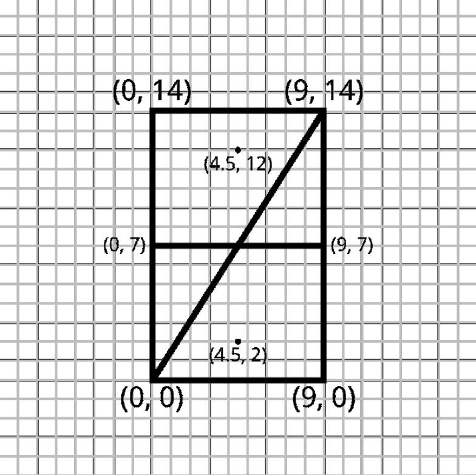
上面的坐标表示如下：
float[] tableVerticesWithTriangles = {
// Triangle 1
0f, 0f,
9f, 14f,
0f, 14f,
// Triangle 2
0f, 0f,
9f, 0f,
9f, 14f
// Line 1
0f, 7f,
9f, 7f,
// Mallets
4.5f, 2f,
4.5f, 12f
};
三角形顶点描述方向
细心的会发现，上面描述三角形的三个顶点的时候是顺时针方向（counter-clockwise order），也被称为风向（winding order）。后面默认都是这个方向。
OpenGL坐标
上面我们定义一套坐标，看起来非常合理，但是有个问题：手机屏幕大小不一，纵横坐标的范围又是多少？我们上面定义了一个Mallet，坐标为(4.5f, 2f)，在不同屏幕的手机上显示效果肯定不一样，而且这个坐标里的4.5f和2f也是随意写的，只有相对大小，没有具体的参照。
事实上，OpenGL的坐标范围都是[-1, +1]。
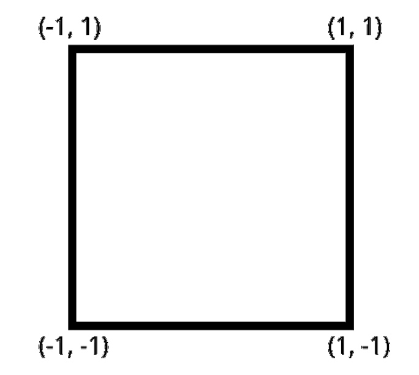
也就是说，想通过OpenGL绘制到屏幕上的内容，其坐标值必须在[-1, +1]之间，否则就无法显示到屏幕上。
所以我们需要对上面定义的坐标进行修改，使其能够显示到屏幕上。
float[] tableVerticesWithTriangles = {
// Triangle 1
-0.5f, -0.5f,
0.5f, 0.5f,
-0.5f, 0.5f,
// Triangle 2
-0.5f, -0.5f,
0.5f, -0.5f,
0.5f, 0.5f,
// Line 1
-0.5f, 0f,
0.5f, 0f,
// Mallets
0f, -0.25f,
0f, 0.25f
};
这样一来，我们想绘制的东西就会显示到屏幕上。
调整屏幕纵横比
经常上一步的处理，我们可以让东西绘制到屏幕上，但是依然会有问题。OpenGL认为所有的屏幕的范围都是[-1,+1]
最简单的一个问题是，比如我们想绘制一个正方形，坐标范围为[-1,+1]，显示到屏幕上就变成了长方形。被拉长了，这个应该很好理解。
比如在OpenGL中，一个常规的坐标范围是正方形：
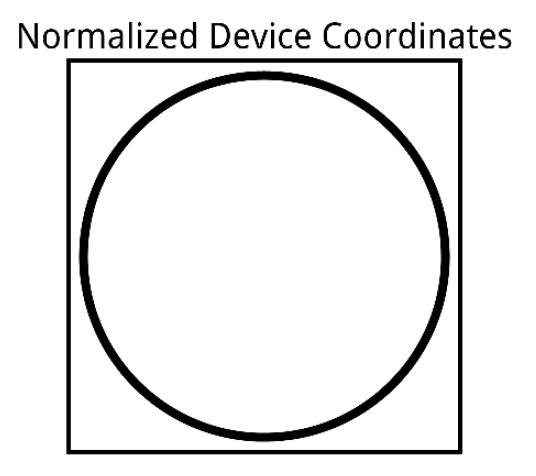
但是到了一个
720*1280的手机上就变成了下面的样子：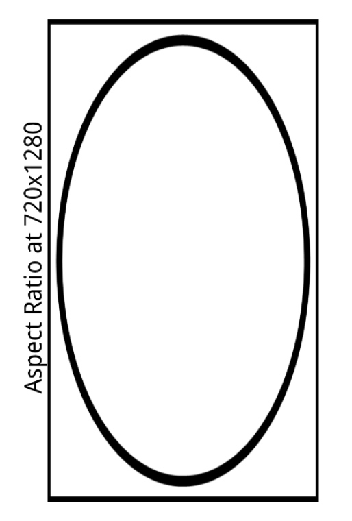
为了解决这个问题，我们还需要一些额外处理。
我们把OpenGL的坐标称为normalized device coordinates，宽和高的范围都是[-1,+1]。
在一个宽320高720的屏幕上，我们想要显示一个全屏的长方形，则x轴坐标范围为[0, 320]，x轴坐标范围为[0, 720]，这种坐标我们定义为virtual coordinate space。然而OpenGL能识别的坐标范围是[-1,+1]，所以我们需要把前者换算成后者，也就是把virtual coordinate space转换成normalized device coordinates，以便于OpenGL能正常显示。
-
这里有两个关键词：
- normalized device coordinates：这个是OpenGL的坐标，宽和高的范围都是
[-1,+1]。 - virtual coordinate space：这个是根据屏幕纵横比调整之后的坐标，宽的范围为
[-1,+1]，高的范围为[-height/width,+height/width]，其中height是屏幕的高，width是屏幕的宽。
- normalized device coordinates：这个是OpenGL的坐标，宽和高的范围都是
正交投影
上面提到需要把方便易懂的virtual coordinate space坐标转换成normalized device coordinates，然后传给OpenGL绘制。这里就用到了下面提到的正交变换API。
orthoM(float[] m, int mOffset, float left, float right, float bottom, float top, float near, float far)
参数解释如下
| 参数 | 含义 |
|---|---|
| float[] m | 正交变换矩阵 |
| int mOffset | 偏移量，默认为0 |
| float left | x轴最小值 |
| float right | x轴最大值 |
| float bottom | y轴最小值 |
| float top | y轴最大值 |
| float near | z轴最小值 |
| float far | z轴最大值 |
该函数会生成下面这个变换矩阵：
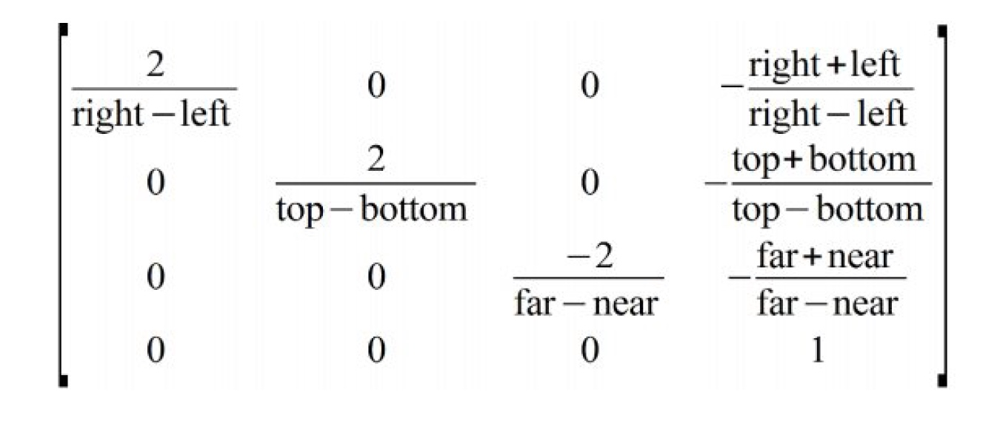
在编程时，要考虑到这一点，在设置位置时需要进行一下正交变换。
写个伪代码方便理解：
normalized_device_coordinates = orthoM(virtual_coordinate_space);
OpenGL管线（Pipeline）
我理解的管线其实就是OpenGL从用户指定的顶点数据，一直到最终显示到手机屏幕上，中间所需要经历的步骤，把这些步骤按照时间先后顺序串成一条线，称为管线。
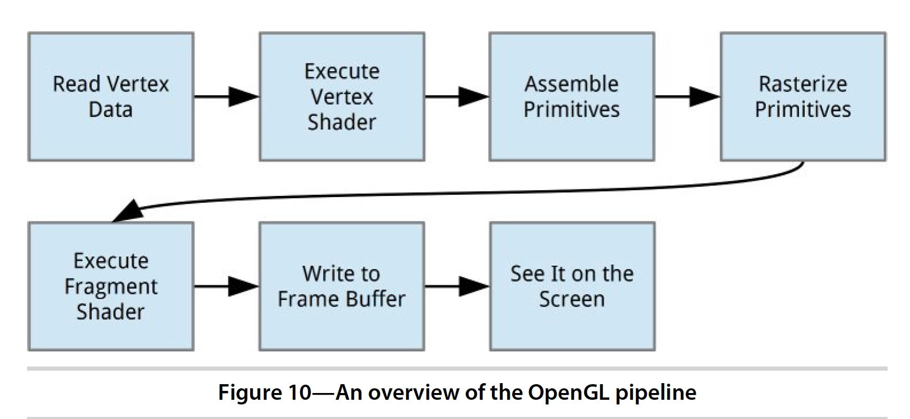
为了理解上面的管线图，我们取图像上的一个像素点的显示过程来说明。
图像上的一个像素点要想最终显示到显示器上，有两个关键点：
① 像素点显示的位置
② 像素点显示的颜色值
那上面的图就可以这么理解：
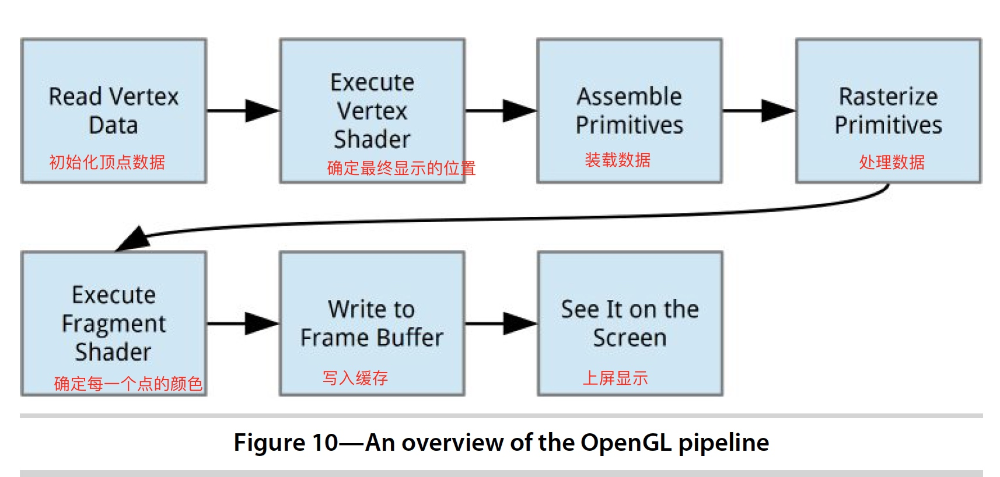
上面的两个步骤分别通过两种不同的Shader处理：
① 使用Vertex Shader确定每一个点的具体显示的位置
② 使用Fragment Shader确定每一个点的具体颜色值
Vertex Shader和Fragment Shader的关系可以用下图表示。
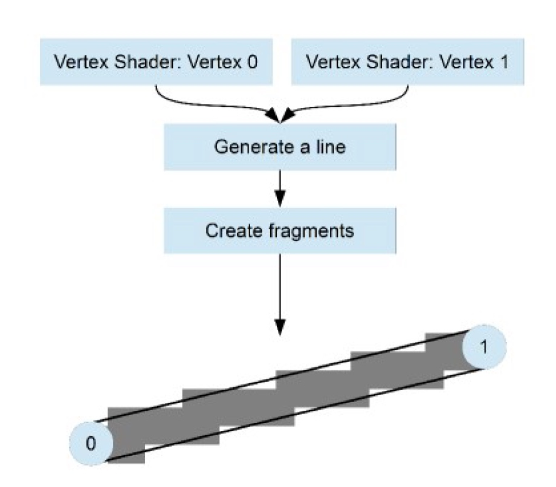
Shader
Shader有两种，分别为Vertex Shader和Fragment Shader。
Shader有专门的语言，OpenGL Shading Language，简称GLSL。语法类似于C语言，一般在/res/raw文件夹下，命名为xxx.glsl。如果对glsl语言不熟悉的话墙裂建议先看一下OpenGL Shading Language（GLSL）语法一览。
Shader通常用xxx.glsl文件描述，该文件中一般形式如下：
attribute vec4 a_Position;
void main()
{
gl_Position = a_Position;
}
其中main方法是Shader的入口函数，当Shader被调用时main方法就会被执行。
Shader的初始化
定义Shader
有了上面的glsl的基本语法知识后，我们开始尝试用glsl来表达Shader。
// AirHockey1/res/raw/simple_vertex_shader.glsl
attribute vec4 a_Position;
void main()
{
gl_Position = a_Position;
}
上面的Vertex Shader很简单，就是声明了一个vec4的变量a_Position，并且在Shader执行时进行赋值操作gl_Position = a_Position;
// AirHockey1/res/raw/simple_fragment_shader.glsl
precision mediump float;
uniform vec4 u_Color;
void main()
{
gl_FragColor = u_Color;
}
上面的Fragment Shader也很简单，就是声明了一个vec4的变量u_Color，并且在Shader执行时进行赋值操作gl_FragColor = u_Color;
创建Shader
final int shaderObjectId = glCreateShader(type);
if (shaderObjectId == 0) {
if (LoggerConfig.ON) {
Log.w(TAG, "Could not create new shader.");
}
return 0;
}
调用APIglCreateShader创建一个空的Shader，其中参数type有两种，分别为GL_VERTEX_SHADER和GL_FRAGMENT_SHADER，分别表示Vertex Shader和Fragment Shader。
该函数返回一个int，是Shader的唯一标识ID，我们后面可以用它来找到这个Shader，类似于Java中的指针一样，指向了创建的对象。
该函数默认返回一个大于0的数值，如果返回0，则表示创建失败。
填充Shader
上一步创建了一个空的Shader，id为shaderObjectId，下面给Shader填充具体的逻辑。
glShaderSource(shaderObjectId, shaderCode);
调用APIglShaderSource为Shader填充具体的逻辑，其中，参数shaderObjectId是Shader的唯一标识ID，在调用glCreateShader创建Shader的时候得到的；参数shaderCode是指上面用glsl写的Shader代码。
编译Shader
上面我们创建并填充了Shader，下面对Shader进行编译。
glCompileShader(shaderObjectId);
调用APIglCompileShader对Shader进行编译，其中，参数shaderObjectId是Shader的唯一标识ID，在调用glCreateShader创建Shader的时候得到的。
不过这一步不一定会成功，比如你的shaderCode写得有问题，我们需要确保这一步成功才能继续下面的工作。
OpenGL不会自动throw Exception，不过我们可以使用API获取执行状态。
final int[] compileStatus = new int[1];
glGetShaderiv(shaderObjectId, GL_COMPILE_STATUS, compileStatus, 0);
if (LoggerConfig.ON) {
// Print the shader info log to the Android log output.
Log.v(TAG, "Results of compiling source:" + "\n" + shaderCode + "\n:"
+ glGetShaderInfoLog(shaderObjectId));
}
if (compileStatus[0] == 0) {
// If it failed, delete the shader object.
glDeleteShader(shaderObjectId);
if (LoggerConfig.ON) {
Log.w(TAG, "Compilation of shader failed.");
}
return 0;
}
链接Shader
我们知道Vertex Shader和Fragment Shader分别是OpenGL管线中的重要的两步，Vertex Shader确定位置，Fragment Shader确定该位置的颜色。它们之间是一一对应，不可或缺的，我们需要将它们链接起来。
在OpenGL中，Vertex Shader和Fragment Shader链接到一起，成为一个Program。
创建Program
final int programObjectId = glCreateProgram();
if (programObjectId == 0) {
if (LoggerConfig.ON) {
Log.w(TAG, "Could not create new program");
}
return 0;
}
调用APIglCreateProgram创建一个空的Program。
该函数返回一个int，是Shader的唯一标识ID，我们后面可以用它来找到这个Shader，类似于Java中的指针一样，指向了创建的对象。
该函数默认返回一个大于0的数值，如果返回0，则表示创建失败。
绑定Shader
上面创建了Program，下面给这个Program绑定Vertex Shader和Fragment Shader。
glAttachShader(programObjectId, vertexShaderId);
glAttachShader(programObjectId, fragmentShaderId);
调用APIglAttachShader为Program绑定Shader。参数也很好理解了，programObjectId是Program的唯一ID标识，vertexShaderId和fragmentShaderId是指Shader的唯一ID标识。
链接Shader
给Program填充了Shader之后就可以进行链接了。
glLinkProgram(programObjectId);
同样的，链接Shader也不一定会成功，我们需要验证下。
final int[] linkStatus = new int[1];
glGetProgramiv(programObjectId, GL_LINK_STATUS, linkStatus, 0);
if (LoggerConfig.ON) {
// Print the program info log to the Android log output.
Log.v(TAG, "Results of linking program:\n"
+ glGetProgramInfoLog(programObjectId));
}
if (linkStatus[0] == 0) {
// If it failed, delete the program object.
glDeleteProgram(programObjectId);
if (LoggerConfig.ON) {
Log.w(TAG, "Linking of program failed.");
}
return 0;
}
验证Program
由于配置不同，有可能设置的Program不兼容，这里验证下。
public static boolean validateProgram(int programObjectId) {
glValidateProgram(programObjectId);
final int[] validateStatus = new int[1];
glGetProgramiv(programObjectId, GL_VALIDATE_STATUS, validateStatus, 0);
Log.v(TAG, "Results of validating program: " + validateStatus[0]
+ "\nLog:" + glGetProgramInfoLog(programObjectId));
return validateStatus[0] != 0;
}
Shader的赋值
给Vertex Shader赋值
上面我们进行了Shader的初始化，并链接成了Program。下面我们通过对两个Shader进行赋值来实现绘制效果。
private static final String A_POSITION = "a_Position";
private int aPositionLocation;
// 获得Vertex Shader的位置参数的地址，以便于后续赋值
aPositionLocation = glGetAttribLocation(program, A_POSITION);
// 给Vertex Shader赋值
vertexData.position(0);
glVertexAttribPointer(aPositionLocation, POSITION_COMPONENT_COUNT, GL_FLOAT,
false, 0, vertexData);
// 通知OpenGL使用顶点数据进行绘制
glEnableVertexAttribArray(aPositionLocation);
这里有个重要的API——glVertexAttribPointer，用来给Vertex Shader赋值。它的参数比较多，说明如下：
函数定义：glVertexAttribPointer(int index, int size, int type, boolean normalized, int stride, Buffer ptr)
参数说明：
| 参数 | 类型 | 作用 |
|---|---|---|
| index | int | Vertex Shader的a_Position的位置，也就是上面取到的aPositionLocation |
| size | int | 这个是指Position的维度，比如二维坐标就填2，三维坐标就填3，以此类推 |
| type | int | 这里是指Position的数据类型，float就填GL_FLOAT，int就填GL_INT，以此类推 |
| normalized | boolean | 这里只有Position的数据类型为int的时候才会用到，其他场景为false |
| stride | int | 跨度，指的是相邻两个Position数据之间的间隔，默认填0 |
| ptr | Buffer | Position的数据buffer |
给Fragment Shader赋值
private static final String U_COLOR = "u_Color";
private int uColorLocation;
uColorLocation = glGetUniformLocation(program, U_COLOR);
显示到屏幕上
我们先来回顾一下Vertex数组：
float[] tableVerticesWithTriangles = {
// Triangle 1
0f, 0f,
9f, 14f,
0f, 14f,
// Triangle 2
0f, 0f,
9f, 0f,
9f, 14f,
// Line 1
0f, 7f,
9f, 7f,
// Mallets
4.5f, 2f,
4.5f, 12f
};
// 指定颜色，颜色写入的位置为uColorLocation，颜色值的rgba分别为1.0f, 1.0f, 1.0f, 1.0f。
glUniform4f(uColorLocation, 1.0f, 1.0f, 1.0f, 1.0f);
// 绘制两个三角形，从数组的下标0开始，绘制六个顶点。
glDrawArrays(GL_TRIANGLES, 0, 6);
// 绘制两条线，从数组的下标6开始，绘制两个顶点。
glUniform4f(uColorLocation, 1.0f, 0.0f, 0.0f, 1.0f);
glDrawArrays(GL_LINES, 6, 2);
// Draw the first mallet blue.
glUniform4f(uColorLocation, 0.0f, 0.0f, 1.0f, 1.0f);
glDrawArrays(GL_POINTS, 8, 1);
// Draw the second mallet red.
glUniform4f(uColorLocation, 1.0f, 0.0f, 0.0f, 1.0f);
glDrawArrays(GL_POINTS, 9, 1);
Shader使用小结
本章节刚开始讲到了Shader的分类、glsl语言。
后面详述了Shader的创建、填充、编译、链接，还讲到了Shader的赋值与最终显示。
Texture
我们上面使用简单的Vertex Shader和Fragment Shader实现了基本图形和颜色的绘制，但是这远远不够。
如果想绘制一些图片呢，就需要用到新的东西——Texture。
上面提到，Fragment Shader有众多的fragment，一个fragment类似于一个像素。Texture包含了很多的texel，这texel也可以理解成一个像素点。
使用Texture可以把各类图片加载到OpenGL中进而进行显示，从而实现炫酷的游戏场景。
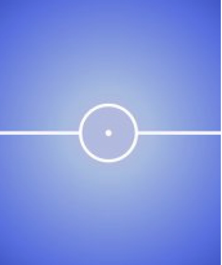
举个例子，上图中，游戏的背景是一张图片，而不是简单的纯色背景。
- 注意
在OpenGL ES 2.0中，Texture不一定要是正方形，但是S和T的值必须是2的n次方。
Texture坐标和图片坐标
Texture本身也是有坐标的，对于二维Texture来说，两个维度分别被称为S和T，不再是x和y轴。
并且，S和T轴的范围都是[0,1]。
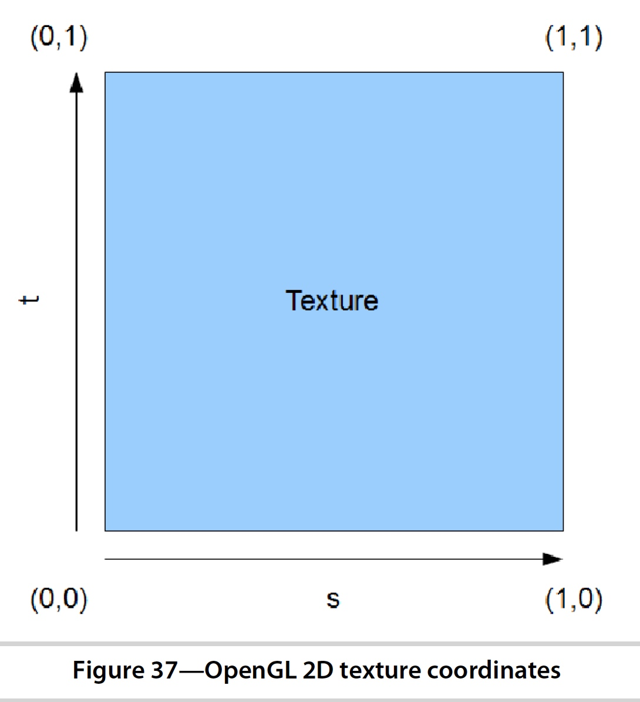
除了Texture有坐标外，图片本身也有坐标，坐标如下。其中，左上角为原点，y轴向下，x轴向左。
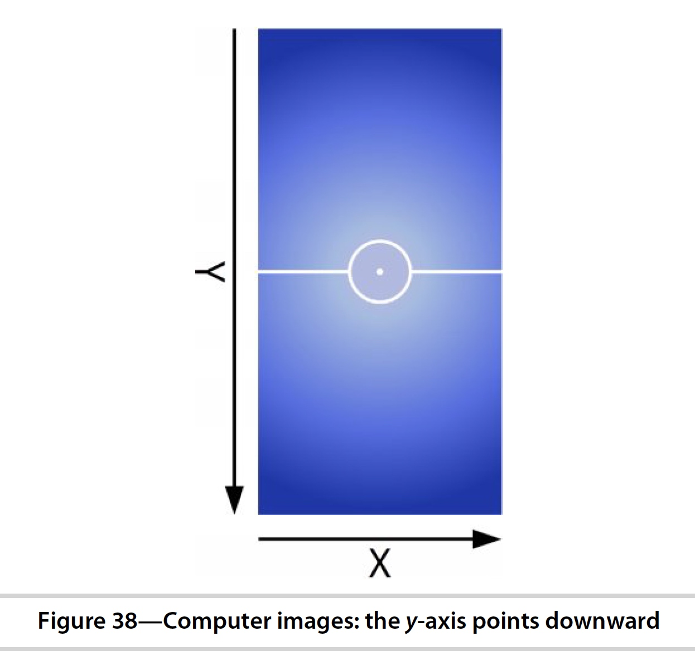
- 关于坐标这一点一定要搞清楚，不然后面各种变换会懵逼的。总结下其实也没几个坐标。
- OpenGL有坐标范围，坐标值范围是
[-1,1]，中心为原点。 - Texture有坐标，坐标值范围是
[0,1]，左下角为原点。 - 图片有坐标，左上角为原点，x轴向左，y轴向下。
把图片加载到Texture中
使用Texture，第一步当然是创建并加载图片进来。
创建Texture
创建一个空的Texture的方式和上面创建Shader差不多，也是直接调用API，然后底层创建一个Texture并返回Texture的唯一ID标识，我们后面可以根据这个ID来获得这个Texture。
同样的，如果ID为0，则创建失败，正常情况ID是大于0的。
final int[] textureObjectIds = new int[1];
glGenTextures(1, textureObjectIds, 0);
if (textureObjectIds[0] == 0) {
if (LoggerConfig.ON) {
Log.w(TAG, "Could not generate a new OpenGL texture object.");
}
return 0;
}
这里有一个新的API：glGenTextures，参数说明如下：
| 参数 | 含义 |
|---|---|
| int n | 给新创建的Texture返回n个唯一ID标识，这里只需要填1就行了 |
| int[] textures | OpenGL会将Texture的ID存放到这个数组里，当然，textures.length >= n + offset |
| int offset | 参数textures的offset，textures.length >= n + offset，你懂的 |
加载Bitmap并绑定到Texture
这里很显然，应该是调用API把Bitmap和Texture绑定起来进行显示，逻辑很简单。
OpenGL在同一时间只能绑定一个Texture，所以这里先把texture绑定到OpenGL，然后再将bitmap传给OpenGL，就可以实现绑定操作。
glBindTexture(GL_TEXTURE_2D, textureObjectIds[0]);
texImage2D(GL_TEXTURE_2D, 0, bitmap, 0);
// OpenGL会copy一份bitmap，所以这里直接回收掉就行
bitmap.recycle();
glGenerateMipmap(GL_TEXTURE_2D);
使用Texture
上面我们已经把bitmap和texture绑定了，下面使用这个texture进行绘制。
// 使用该Texture
glActiveTexture(GL_TEXTURE0);
glUniform1i(uTextureUnitLocation, 0);
创建Texture相关的Shader
创建Vertex Shader
uniform mat4 u_Matrix;
attribute vec4 a_Position;
attribute vec2 a_TextureCoordinates;
varying vec2 v_TextureCoordinates;
void main()
{
v_TextureCoordinates = a_TextureCoordinates;
gl_Position = u_Matrix * a_Position;
}
创建Fragment Shader
precision mediump float;
uniform sampler2D u_TextureUnit;
varying vec2 v_TextureCoordinates;
void main()
{
gl_FragColor = texture2D(u_TextureUnit, v_TextureCoordinates);
}
u_TextureUnit是Texture的数据，v_TextureCoordinates是Texture的某个位置，texture2D返回这个Texture在v_TextureCoordinates这个位置的颜色，并赋值给gl_FragColor，进而绘制到屏幕。
OpenGL绘图实例
顺手写了两个demo，有需要的可以参考下。OpenGL-ES-2.0-for-Android
主要看一下下面两个功能：
参考文档
http://www.learnopengles.com/understanding-opengls-matrices/
转载请注明出处：《OpenGL ES 2.0 for Android》读书笔记 - 专业点
欢迎关注我的公众号

推荐

公众号推荐
欢迎关注我的公众号一起愉快的交流。